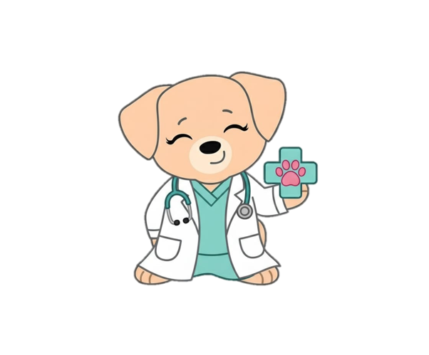
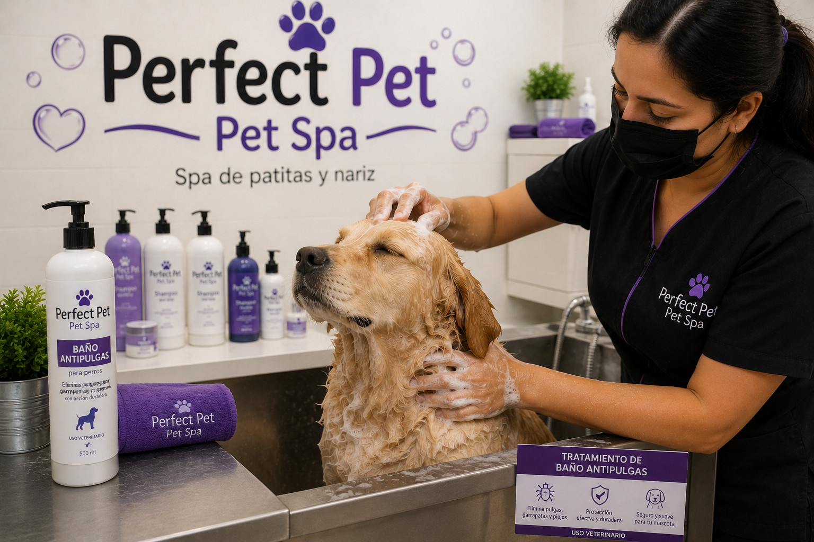
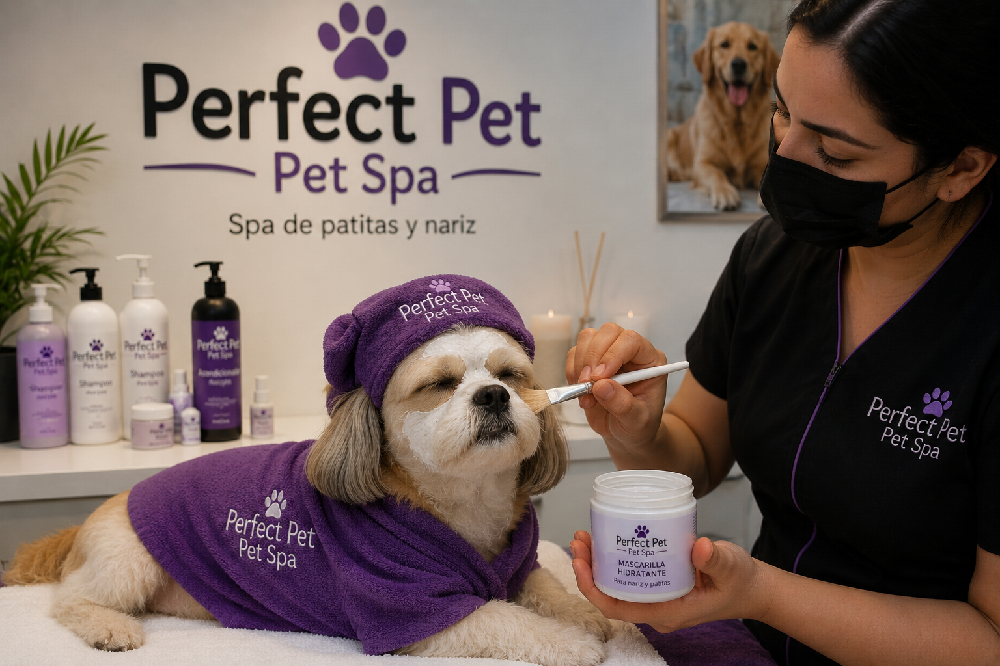
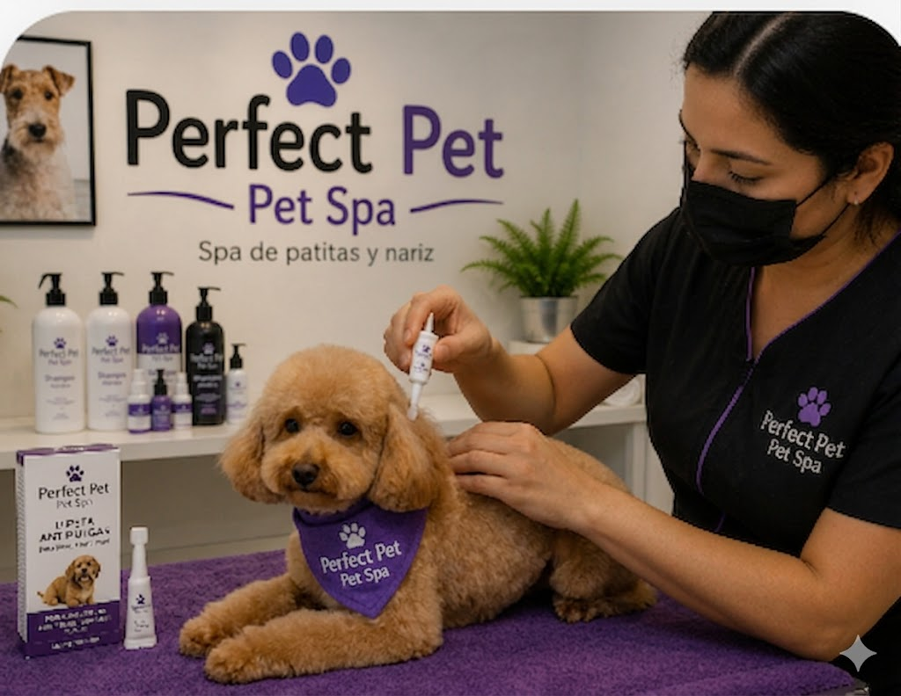
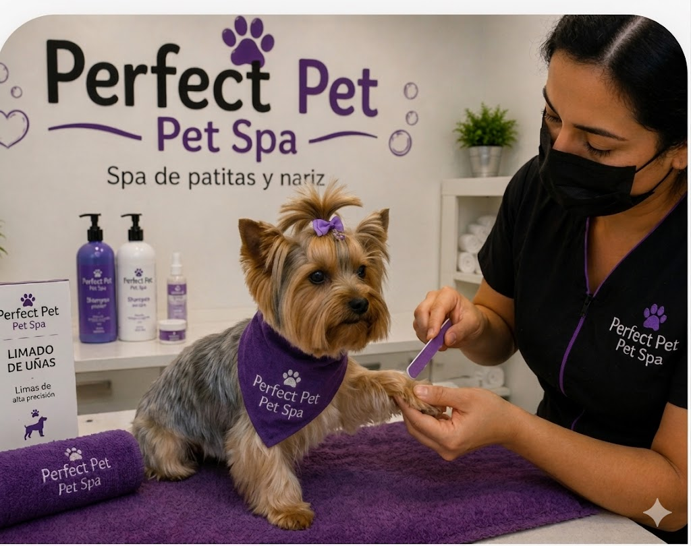
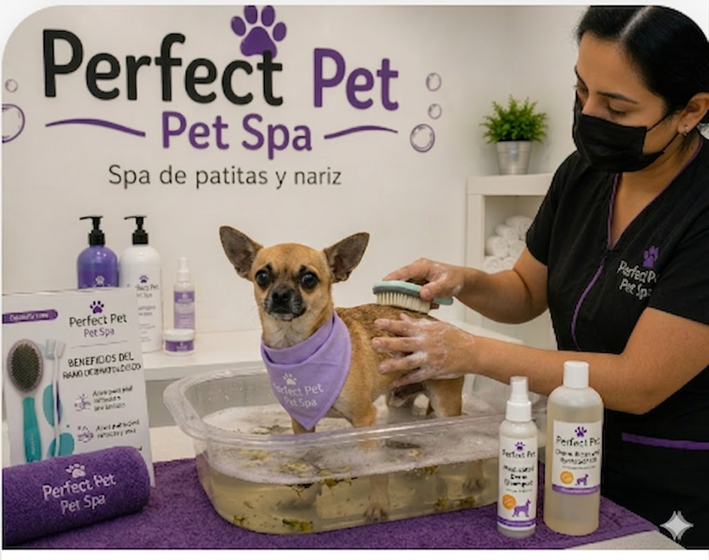
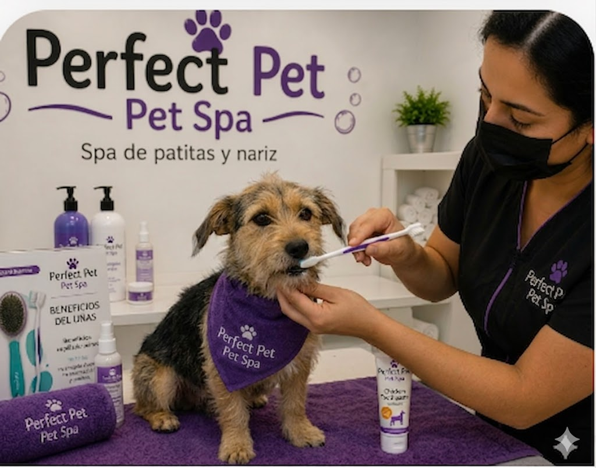
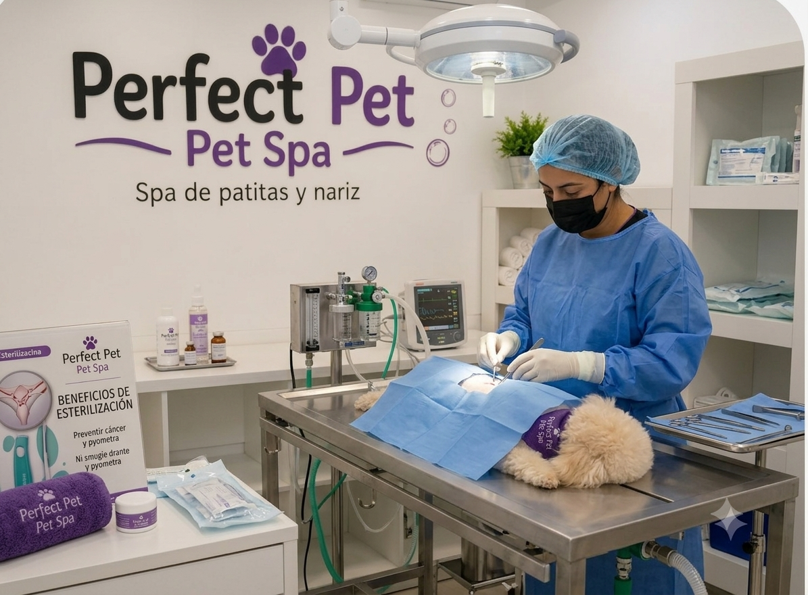
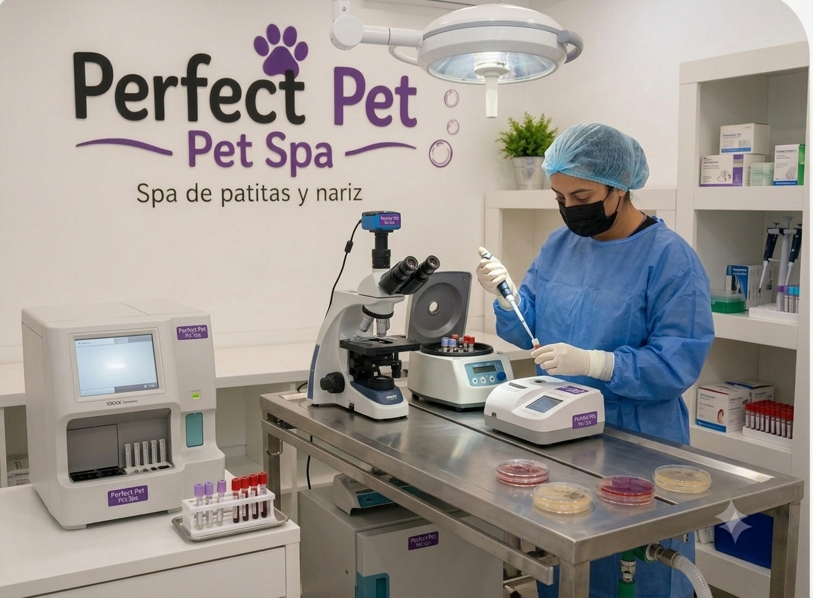

En Perfect Pet creemos que cada mascota merece un cuidado especial. En esta sección encontrarás todos los servicios de spa que ofrecemos para consentir a tu mejor amigo, desde baños relajantes y cortes de estética hasta tratamientos especializados para el cuidado de su piel y pelaje.
✨ Descubre el servicio ideal para que tu mascota luzca limpia, saludable y feliz.
Tiempo estimado del servicio: La duración puede variar según el tamaño de la mascota, el estado de su pelaje, el tipo de servicio solicitado y su comportamiento durante el proceso.

Nuestro baño especializado elimina eficazmente pulgas y garrapatas, brindando a tu mascota protección y alivio instantáneo.

Tratamiento corporal con mascarilla nutritiva que hidrata profundamente el pelaje y la piel, ideal para mantener un aspecto sano y brillante.

Aplicamos un humectante especial que suaviza, hidrata y protege las almohadillas y la trufa contra resequedad y agrietamiento.

Decoración divertida y segura con esmaltes no tóxicos diseñados especialmente para mascotas.

Protección prolongada contra pulgas, garrapatas y otros parásitos externos por varias semanas.

Limpieza y limado con herramienta Dremel para un acabado suave, seguro y sin bordes filosos.

Un baño dermatológico es un procedimiento terapéutico que utiliza agua combinada con productos específicos (medicados o naturales) para tratar diversas afecciones de la piel.

El cepillado de dientes continuo en perros es una parte fundamental de su higiene para prevenir el mal aliento.

Es una limpieza dental profunda y profesional que realiza el veterinario para eliminar el sarro y la placa bacteriana acumulada en los dientes y debajo de las encías de tu mascota.

Procedimientos seguros con monitoreo profesional y anestesia cuidada. Protege la salud de tu perrito, previene enfermedades reproductivas y dale una vida más tranquila y feliz.

Son herramientas de diagnóstico esenciales que analizan muestras biológicas de tu mascota (como sangre, orina, heces o células de la piel). Permiten a los veterinarios "mirar dentro" del organismo del perrito para detectar enfermedades de forma temprana.